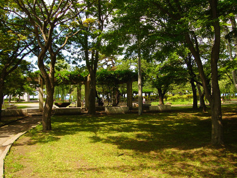
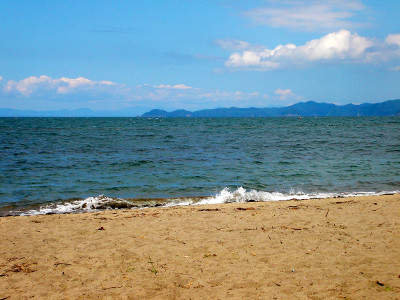

合浦（がっぽ）公園
太宰治が毎日、目にした海のある公園
写真をクリックすると拡大表示します。 
{kind=link}
{kind=link}
太宰治が1923年～1927年の４年間通った、旧制・青森中学校を包み込むように位置している公園(写真左)。
陸奥湾に面した、全国的にも珍しい海浜公園です(写真右)。
自伝的小説「思ひ出」には、「（青森中学校の）すぐ裏は海峽に面したひらたい公園で、 浪の音や松のざわめきが授業中にも聞こえて來て、廊下も廣く教室の天井も高くて、私はすべてにいい感じを受けたのだ」 と書かれています。
「津軽」にも、「この公園は、ほとんど中学校の裏庭と言ってもいいほど、中学校と密着してゐた」 「冬の吹雪の時以外は、この公園を通り抜け、海岸づたひに歩いた」と記されています。
「人間失格」にも、合浦公園の特徴をよく表した記述が見られます。
弘前藩（津軽藩）の庭師であった水原衛作が1882(明治15)年、自費で造園工事を開始、 1896年、青森町(現・青森市)に譲渡されました（青森空襲を記録する会「青森今昔物語：絵葉書でたどる青森市の百年」）。
合浦公園が開園した時期は、日本全国で、公園など不特定多数の人が集う場ができた時期です。
太宰治が毎日目にし、歩き、友人と議論した合浦公園は今、春は観桜会の場として、 初夏には藤の花が美しい場として、夏は海水浴場として、青森市民に親しまれています。
散歩してはいかかでしょうか？このスポットは次の散歩コースに組み込まれてます。自伝的小説「思ひ出」には、「（青森中学校の）すぐ裏は海峽に面したひらたい公園で、 浪の音や松のざわめきが授業中にも聞こえて來て、廊下も廣く教室の天井も高くて、私はすべてにいい感じを受けたのだ」 と書かれています。
「津軽」にも、「この公園は、ほとんど中学校の裏庭と言ってもいいほど、中学校と密着してゐた」 「冬の吹雪の時以外は、この公園を通り抜け、海岸づたひに歩いた」と記されています。
「人間失格」にも、合浦公園の特徴をよく表した記述が見られます。
弘前藩（津軽藩）の庭師であった水原衛作が1882(明治15)年、自費で造園工事を開始、 1896年、青森町(現・青森市)に譲渡されました（青森空襲を記録する会「青森今昔物語：絵葉書でたどる青森市の百年」）。
合浦公園が開園した時期は、日本全国で、公園など不特定多数の人が集う場ができた時期です。
太宰治が毎日目にし、歩き、友人と議論した合浦公園は今、春は観桜会の場として、 初夏には藤の花が美しい場として、夏は海水浴場として、青森市民に親しまれています。